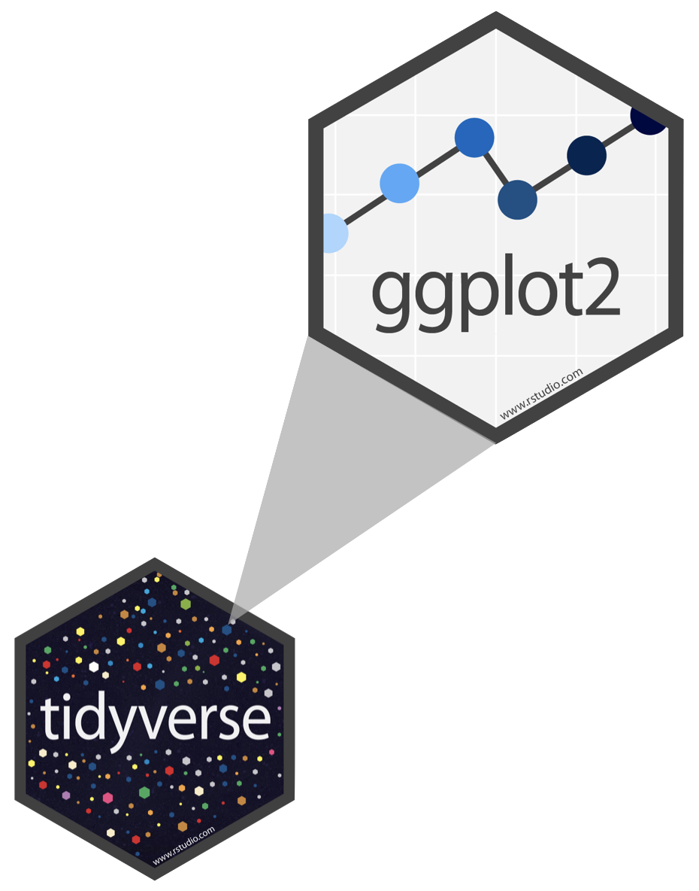
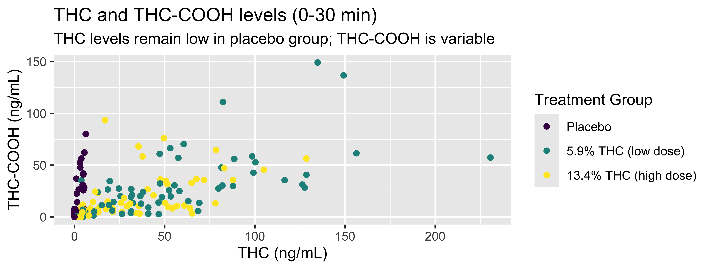
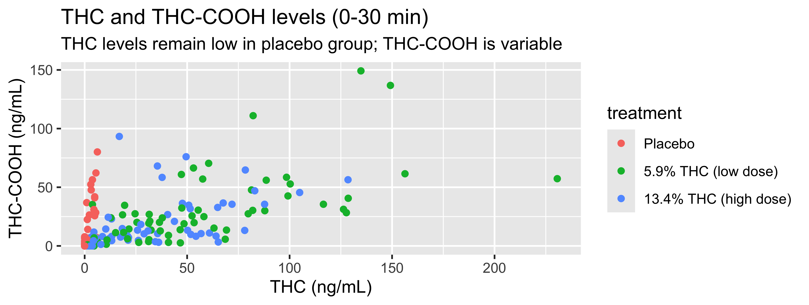
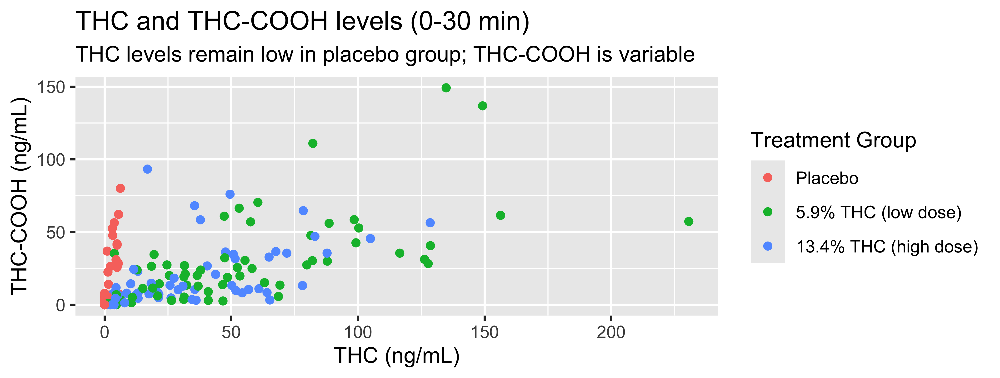
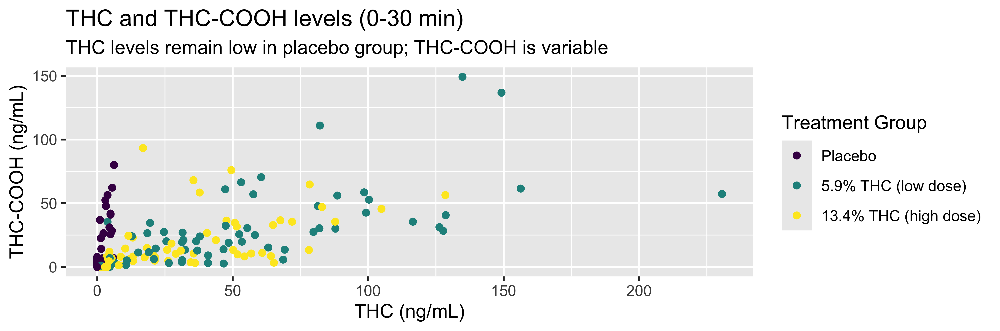
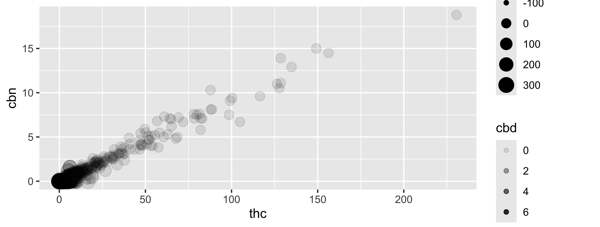
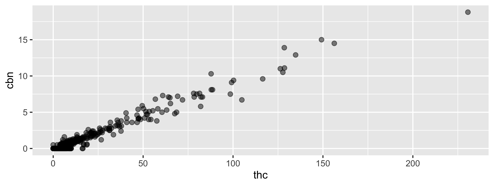
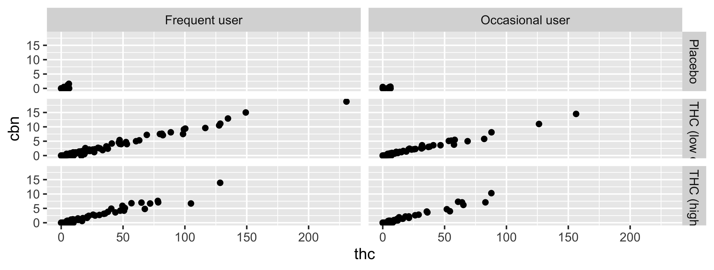
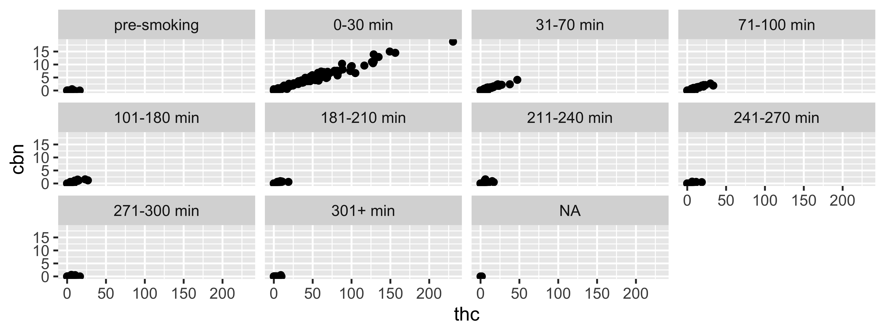

05-ggplot2
Data Visualization with ggplot2
Q&A
Q:
A:
Course Announcements
Due Dates:
- ⌨️ Lab 02 due today, Fri 10/9 (11:59 PM)
- 📚 HW 01 due Sun 10/11 (11:59 PM)
- ⌨️ Lab 03 due Fri 10/16 (11:59 PM)
- 🔘 Lecture Participation survey “due” after class
Suggested Reading
- R4DS Chapter 9: Data Visualization
- Data to Viz: https://www.data-to-viz.com/
ggplot2 \(\in\) tidyverse

- ggplot2 is tidyverse’s data visualization package
- Structure of the code for plots can be summarized as
ggplot(data = [dataset],
mapping = aes(x = [x-variable],
y = [y-variable])) +
geom_xxx() +
other optionsData: CS01 WB
WB <- read_csv("data/Blood.csv")The Data
glimpse(WB)Rows: 1,525
Columns: 14
$ ID <chr> "11255", "11255", "11255", "11255", "11255", "11255", …
$ Treatment <chr> "5.90%", "5.90%", "5.90%", "5.90%", "5.90%", "5.90%", …
$ Group <chr> "Occasional user", "Occasional user", "Occasional user…
$ `FLUID TYPE` <chr> "WB", "WB", "WB", "WB", "WB", "WB", "WB", "WB", "WB", …
$ Timepoint <chr> "T1", "T2A", "T2B", "T3A", "T3B", "T4A", "T4B", "T5A",…
$ CBN <dbl> 0.0, 2.8, 0.6, 0.0, 0.0, 0.0, 0.0, 0.0, 0.0, 0.0, 4.6,…
$ CBD <dbl> 0, 0, 0, 0, 0, 0, 0, 0, 0, 0, 0, 0, 0, 0, 0, 0, 0, 0, …
$ THC <dbl> 0.5, 32.4, 5.1, 3.2, 1.8, 1.2, 0.9, 0.8, 0.6, 0.0, 46.…
$ `11-OH-THC` <dbl> 0.0, 5.4, 2.4, 1.8, 1.4, 0.0, 0.0, 0.0, 0.0, 0.0, 7.7,…
$ `THC-COOH` <dbl> 5.7, 13.5, 11.7, 9.7, 8.7, 6.7, 6.8, 6.8, 6.3, 1.9, 13…
$ `THC-COOH-Gluc` <dbl> 4.9, 4.4, 6.2, 8.4, 8.9, 8.2, 7.5, 7.1, 6.1, 2.1, 2.7,…
$ CBG <dbl> 0.0, 1.2, 0.0, 0.0, 0.0, 0.0, 0.0, 0.0, 0.0, 0.0, 2.0,…
$ `THC-V` <dbl> 0, 0, 0, 0, 0, 0, 0, 0, 0, 0, 0, 0, 0, 0, 0, 0, 0, 0, …
$ time.from.start <dbl> -27, 15, 69, 111, 156, 236, 283, 315, 360, -10, 20, 73…The Cleaning
We’ve packaged the cleaning from the dplyr notes into one function, clean_cs01(), saved in src/cs01_functions.R:
# ==== Cleaning ================================================================
# Clean one raw CS01 file (Blood.csv, OF.csv, or Breath.csv).
# fluid: "WB", "OF", or "BR" (determines the time windows)
clean_cs01 <- function(df, fluid = c("WB", "OF", "BR")) {
fluid <- match.arg(fluid)
win <- cs01_windows[[fluid]]
df |>
janitor::clean_names() |>
rename(any_of(c(fluid_type = "fluid",
thcoh = "x11_oh_thc",
thccooh = "thc_cooh",
thccooh_gluc = "thc_cooh_gluc",
thcv = "thc_v",
thc = "thc_pg_pad"))) |>
mutate(
treatment = fct_recode(treatment,
"5.9% THC (low dose)" = "5.90%",
"13.4% THC (high dose)" = "13.40%"),
treatment = fct_relevel(treatment, "Placebo", "5.9% THC (low dose)"),
group = case_match(group,
"Experienced user" ~ "Frequent user",
"Not experienced user" ~ "Occasional user",
.default = group),
timepoint = cut(time_from_start, breaks = win$breaks, labels = win$labels)
)
}WB <- WB |> clean_cs01("WB") Compare to the case_when() in the dplyr notes: what does cut() do here?
A Plot

WB |>
filter(timepoint=="0-30 min") |>
ggplot(., mapping = aes(x = thc, y = thccooh,
color = treatment)) +
geom_point() +
labs(title = "THC and THC-COOH levels (0-30 min)",
subtitle = "THC levels remain low in placebo group; THC-COOH is variable",
x = "THC (ng/mL)", y = "THC-COOH (ng/mL)",
color = "Treatment Group") +
scale_color_viridis_d()Coding out loud
Start with the
WBdata frame (filtering to only include first timepoint)
WB |>
filter(timepoint=="0-30 min") |>
ggplot() Start with the
WBdata frame, map thc levels to the x-axis
Start with the
WBdata frame, map thc levels to the x-axis and map thccooh levels to the y-axis.
Start with the
WBdata frame, map thc levels to the x-axis and map thccooh levels to the y-axis. Represent each observation with a point.
Start with the
WBdata frame, map thc levels to the x-axis and map thccooh levels to the y-axis. Represent each observation with a point and map treatment group to the color of each point.
Start with the
WBdata frame, map thc levels to the x-axis and map thccooh levels to the y-axis. Represent each observation with a point and map treatment group to the color of each point. Title and subtitle the plot.
Start with the
WBdata frame, map thc levels to the x-axis and map thccooh levels to the y-axis. Represent each observation with a point and map treatment group to the color of each point. Title and subtitle the plot, label the x and y axes
WB |>
filter(timepoint=="0-30 min") |>
ggplot(mapping = aes(x = thc,
y = thccooh,
color = treatment)) +
geom_point() +
labs(title = "THC and THC-COOH levels (0-30 min)",
subtitle = "THC levels remain low in placebo group; THC-COOH is variable",
x = "THC (ng/mL)", y = "THC-COOH (ng/mL)") 
Start with the
WBdata frame, map thc levels to the x-axis and map thccooh levels to the y-axis. Represent each observation with a point and map treatment group to the color of each point. Title and subtitle the plot, label the x and y axes, and title the legend.
WB |>
filter(timepoint=="0-30 min") |>
ggplot(., mapping = aes(x = thc, y = thccooh,
color = treatment)) +
geom_point() +
labs(title = "THC and THC-COOH levels (0-30 min)",
subtitle = "THC levels remain low in placebo group; THC-COOH is variable",
x = "THC (ng/mL)", y = "THC-COOH (ng/mL)",
color = "Treatment Group") 
Start with the
WBdata frame, map thc levels to the x-axis and map thccooh levels to the y-axis. Represent each observation with a point and map treatment group to the color of each point. Title and subtitle the plot, label the x and y axes, and title the legend. Finally, use a discrete color scale that is designed to be perceived by viewers with common forms of color blindness.
WB |>
filter(timepoint=="0-30 min") |>
ggplot(., mapping = aes(x = thc, y = thccooh,
color = treatment)) +
geom_point() +
labs(title = "THC and THC-COOH levels (0-30 min)",
subtitle = "THC levels remain low in placebo group; THC-COOH is variable",
x = "THC (ng/mL)", y = "THC-COOH (ng/mL)",
color = "Treatment Group") +
scale_color_viridis_d()
Coding out loud
WB |>
filter(timepoint=="0-30 min") |>
ggplot(., mapping = aes(x = thc, y = thccooh,
color = treatment)) +
geom_point() +
labs(title = "THC and THC-COOH levels (0-30 min)",
subtitle = "THC levels remain low in placebo group; THC-COOH is variable",
x = "THC (ng/mL)", y = "THC-COOH (ng/mL)",
color = "Treatment Group") +
scale_color_viridis_d()
Start with the WB data frame, map thc levels to the x-axis and map thccooh levels to the y-axis.
Represent each observation with a point and map treatment group to the color of each point.
Title and subtitle the plot, label the x and y axes, and title the legend.
Finally, use a discrete color scale that is designed to be perceived by viewers with common forms of color blindness.
Argument names
Tip
You can omit the names of first two arguments when building plots with ggplot().
Your Turn
Generate a basic plot in ggplot2 using different filtering and/or variables than those in the last example (last example: thc & thccoooh, “0-30 min” timepoint).
Put a green sticky on the front of your computer when you’re done. Put a pink if you want help/have a question.
Aesthetics
Aesthetics options
Commonly used characteristics of plotting characters that can be mapped to a specific variable in the data are
colorshapesizealpha(transparency)
Color
Mapping vs. setting
- Mapping: Determine the size, alpha, etc. of points based on the values of a variable in the data
- goes into
aes()
- goes into
- Setting: Determine the size, alpha, etc. of points not based on the values of a variable in the data
- goes into
geom_*()(this wasgeom_point()in the previous example, but we’ll learn about other geoms soon!)
- goes into
Mapping vs. Setting (example)
Mapping
ggplot(data = WB,
mapping = aes(x = thc, y = cbn,
size = time_from_start,
alpha = cbd)) +
geom_point() +
scale_color_viridis_d()
Setting
ggplot(data = WB,
mapping = aes(x = thc, y = cbn)) +
geom_point(size = 2, alpha = 0.5) +
scale_color_viridis_d()
Your Turn
Edit the basic plot you created earlier to change something about its aesthetics.
Put a green sticky on the front of your computer when you’re done. Put a pink if you want help/have a question.
geoms
Common geoms
geom 1 |
Description 2 |
|---|---|
geom_point |
scatterplot |
geom_bar |
barplot |
geom_line |
line plot |
geom_density |
densityplot |
geom_histogram |
histogram |
geom_boxplot |
boxplot |
Your Turn
Generate a plot in ggplot2 using a different geom than what you did previously. Customize as much as you can before time is “up.”
Put a green sticky on the front of your computer when you’re done. Put a pink if you want help/have a question.
Recap
- Can I explain the overall structure of a call to generate a plot in
ggplot2? - Can I describe
ggplot2code? Can I create plots usingggplot2? - Can I explain the difference between mapping and setting?
- Can I alter the aesthetics of a basic plot? (color, shape, size, transparency)
- Am I able to facet a plot to generate a grid of figures
- Can I describe what a
geomis and do I know the basic plots available?
Reference: more aesthetics & faceting
These slides aren’t covered in lecture. Use them as a reference; on Wed 10/14 you’ll implement changes like these with AI and check its work against what’s here.
Shape
Mapped to a different variable than treatment
Shape
Mapped to same variable as color
Size
Alpha
Faceting overview
Faceting
- Smaller plots that display different subsets of the data
- Useful for exploring conditional relationships and large data
facet_grid
2d grid; `rows ~ cols

facet_wrap
“1d ribbon wrapped according to number of rows and columns specified or available plotting area”
